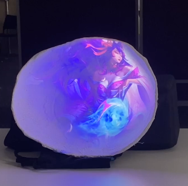

Project Title: Ahri's Journey
Type: Projection
Platform: PC
Software: MadMapper
Languages Used: Max8, JavaScript

Project Description: Ahri's Journey is a projection mapping project that brings the character Ahri from the game League of Legends to life. The project uses MadMapper and Photoshop to create an immersive experience that showcases Ahri's abilities, skins and story. The projection includes dynamic visuals and animations that enhance the viewer's understanding of Ahri's character and her journey in the game. The project featured a control board that allowed users to navigate to each section showcasing the three different Ahri skins. It aims to create a deeper emotional connection between the audience and the character.
Key Features: